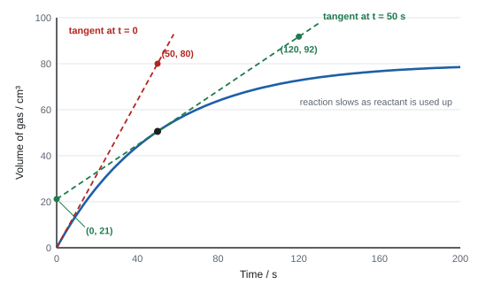
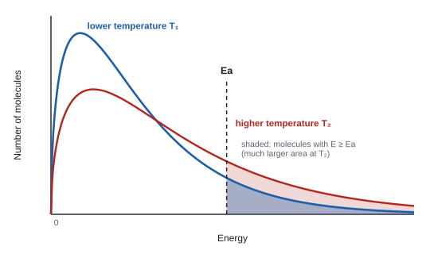
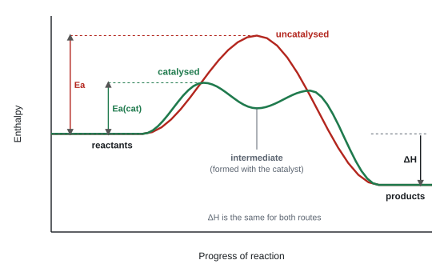
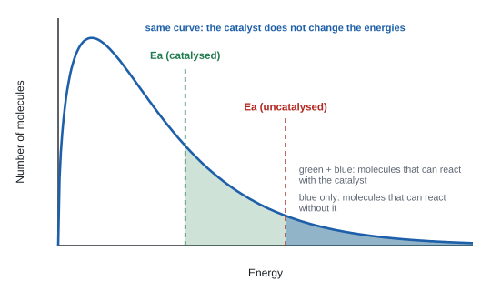

Introduction to kinetics and equilibria
Kinetics asks how fast a reaction goes; equilibrium asks how far it goes. This topic explains rates using collision theory and the Maxwell–Boltzmann distribution of molecular energies, shows how catalysts work, and then uses Le Chatelier's principle to predict how a reversible reaction responds when you change the conditions, including the compromises made in industry.
Spec9.1Collision theory: concentration, temperature, pressure and surface area
Use collision theory to explain how concentration, temperature, pressure and surface area change the rate of a reaction.
What has to happen for particles to react
- Particles must collide.
- The collision must have energy at least equal to the activation energy (Ea), so bonds can start to break (9.2).
- The particles must meet with the right orientation, so the reacting parts of the particles actually touch.
- A collision that meets these conditions is a successful (or effective) collision. Most collisions aren't successful: the particles just bounce apart.
- Rate depends on the number of successful collisions per unit time (the frequency of successful collisions), not just on how many collisions there are in total.
The four factors
| Change | What happens to the particles | Effect on rate |
|---|---|---|
| Higher concentration (solutions) | more particles in the same volume, so they collide more often | more successful collisions per unit time |
| Higher pressure (gases only) | the same gas particles are squeezed into a smaller volume: more particles per unit volume | more successful collisions per unit time |
| Larger surface area (solids, e.g. powder instead of lumps) | more particles are exposed at the surface and available to collide | more successful collisions per unit time |
| Higher temperature | particles have more kinetic energy: (1) a much greater proportion have energy ≥ Ea; (2) they also move faster, so collide a little more often | many more successful collisions per unit time; effect (1) is by far the bigger one (see 9.4) |
- Concentration, pressure and surface area change how often particles collide. They don't change the energy of the particles, so the fraction of collisions that succeed stays the same.
- Temperature is different: it changes the energy of the particles, so it changes the fraction of collisions that succeed. That's why a 10 °C rise can roughly double the rate of many reactions.
- Pressure only matters when at least one reactant is a gas. Changing the pressure on a reaction in solution has no real effect.
Build every "explain the effect on rate" answer from three links: what changes about the particles → more successful collisions → per unit time (or "more frequent"). Leaving out "per unit time" or "successful" is the most common way to drop a mark.
- Concentration: "more particles in the same volume" and "more (successful) collisions per unit time". ALLOW "particles are closer", "frequency of collisions". IGNORE "chance / probability of collisions". "More particles so more successful collisions" scores only 1 (WCH12 Jan 2025).
- Surface area: "larger surface area", ALLOW "more (active) sites". IGNORE "greater area of contact".
- Temperature: "particles have more kinetic energy", "more particles have energy ≥ Ea", "more successful collisions per unit time".
- Pressure: "more collisions per unit time". Any reference to atoms (instead of molecules or particles) can lose the mark.
Often asked as: explain why a change in concentration, pressure or catalyst particle size speeds up a reaction, usually inside an industrial-process question.
"Particles collide more" with no time reference. Say more frequent collisions or more collisions per second.
"Higher concentration gives particles more energy." It doesn't: only temperature changes particle energy.
Mixing up the explanation for rate with the explanation for yield. Pressure can raise both, but for different reasons: collisions for rate, Le Chatelier for yield (9.10). In a two-mark answer the examiners want one consistent route.
Spec9.2Activation energy
Understand that a collision only leads to reaction if it has enough energy: at least the activation energy.
Definition
- Activation energy (Ea) is the minimum energy that colliding particles need for a reaction to happen.
- It is the energy needed to start breaking bonds in the reactants. On a reaction profile it's the height of the "hill" from the reactants up to the peak (the transition state).
- Every reaction has an Ea, whether it's exothermic or endothermic. Its size isn't set by ΔH: a very exothermic reaction can still have a large Ea (that's why fuels don't catch fire until you light them).
- For an endothermic reaction Ea must be at least as big as ΔH, because the products sit higher than the reactants.
Reading a reaction profile
- x-axis: progress of reaction; y-axis: enthalpy (or energy).
- Ea: arrow from the reactant line up to the peak.
- ΔH: arrow from the reactant line to the product line (points down for exothermic, up for endothermic).
- See the figure in 9.6 for a labelled example.
- "Particles with energy ≥ Ea" (ALLOW "collisions with energy greater than Ea").
- On a profile, Ea is drawn as a rise from the reactants to the peak. An arrow starting at the products, or ending below the peak, loses the mark (WCH12 Jan 2022).
Often asked as: label Ea on a profile (often for an endothermic reaction); use Ea inside a Maxwell–Boltzmann or catalyst explanation.
Drawing Ea from the products to the peak (that's the Ea of the reverse reaction).
Calling Ea "the energy needed for the reaction": say minimum energy, and that it's needed for a successful collision.
Spec9.3Calculating rate: 1/time and gradients
Calculate a rate (i) as 1/time from the time taken for a reaction, and (ii) from the gradient of a graph, by drawing a tangent, for the initial rate or the rate at time t.
What rate means
- Rate of reaction = change in amount (or concentration) of a reactant or product per unit time.
- Units follow what you measured: mol dm−3 s−1 for concentration, cm³ s−1 for a gas volume, g s−1 for a mass.
Ways to follow a reaction
| Method | Use it when | Example |
|---|---|---|
| Gas volume (gas syringe or upturned measuring cylinder/burette over water) | a gas is made | marble chips + HCl; decomposition of H₂O₂ |
| Mass loss (open flask on a balance) | a dense gas escapes (CO₂ works; H₂ is too light to measure well) | CaCO₃ + HCl |
| Time for a set change ("clock" method) | a colour appears or a precipitate hides a mark | sodium thiosulfate + HCl (cloudy sulfur hides a cross) |
| Sampling and titration | concentration changes but nothing is visible | take samples, quench them (stop the reaction, e.g. by cooling or diluting), titrate |
(i) Rate = 1/time
- In a clock reaction you measure the time for a fixed amount of reaction (for example, the cross disappearing).
- A shorter time means a faster rate, so rate ∝ 1/time. The value 1/t (units s⁻¹) is used as a measure of the rate.
- Plot 1/t against concentration (or temperature) to see how rate depends on it. A straight line through the origin means rate is proportional to concentration.
Worked example: rate from 1/time
Sodium thiosulfate reacts with dilute HCl: S₂O₃²⁻(aq) + 2H⁺(aq) → S(s) + SO₂(g) + H₂O(l). The sulfur makes the mixture cloudy.
The cross under the flask disappears after 40 s with 0.10 mol dm⁻³ thiosulfate, and after 80 s with 0.05 mol dm⁻³.
Rate (0.10 mol dm⁻³) = 1/40 = 0.025 s⁻¹ (2.5 × 10⁻² s⁻¹)
Rate (0.05 mol dm⁻³) = 1/80 = 0.0125 s⁻¹ (1.25 × 10⁻² s⁻¹)
Halving the concentration halved 1/t, so rate is proportional to the thiosulfate concentration.
Exam data often uses (1/t) × 10³ to give tidy numbers: 1/40 = 0.025, so (1/t) × 10³ = 25.
(ii) Rate from a gradient
- On a graph of amount (or volume, or concentration) against time, the rate at any moment = gradient of the curve at that moment.
- The curve gets less steep with time because reactants are used up, so collisions become less frequent.
- To find the gradient of a curve, draw a tangent: a straight line that just touches the curve at that point, with the same slope.
- Initial rate = gradient of the tangent at t = 0. It's the fairest way to compare experiments, because nothing has been used up yet.

Magnesium reacts with excess hydrochloric acid and the hydrogen is collected in a gas syringe. A tangent drawn to the volume–time curve at t = 0 passes through the origin and through the point (20 s, 36 cm3). Find the initial rate.
The gradient of the tangent is the initial rate:
\[ \text{rate} = \frac{\Delta V}{\Delta t} = \frac{36\ \text{cm}^3}{20\ \text{s}} = 1.8\ \text{cm}^3\ \text{s}^{-1} \]Choose two points on the tangent that are far apart: this makes the gradient more precise.
To express it in mol s−1, use the molar volume (24.0 dm3 mol−1 = 24 000 cm3 mol−1 at room temperature and pressure):
\[ \frac{1.8}{24\,000} = 7.5 \times 10^{-5}\ \text{mol s}^{-1} \]Worked example: initial rate and rate at t = 50 s
Initial rate (red tangent): it passes through (0, 0) and (50, 80).
Gradient = (80 − 0) / (50 − 0) = 1.6 cm³ s⁻¹
Rate at 50 s (green tangent): read two points far apart on the tangent, (0, 21) and (120, 92).
Gradient = (92 − 21) / (120 − 0) = 71 / 120 = 0.59 cm³ s⁻¹
The rate has fallen to about a third of its starting value because the acid is being used up.
Draw the tangent long: at least half the width of the grid. Read two points far apart that sit on grid lines. A short tangent magnifies any reading error. Always write the units: they come from the axes (cm³ ÷ s → cm³ s⁻¹).
- Tangent at t = 0 must touch the curve and be long enough (in Jun 2022 it had to reach at least 20 cm³). Gradient accepted within a range (0.25–0.33 there). The unit cm³ s⁻¹ was a separate mark.
- Graph marks: sensible scale using at least half the grid; axes labelled with units; points within ½ small square; smooth curve of best fit (not dot-to-dot).
- Halving the acid concentration (acid limiting): "initial rate halves and final volume of gas halves".
Often asked as: calculate 1/t for a table (to 3 s.f.) and plot it; draw a tangent and work out the initial rate; predict how initial rate and final volume change if the concentration or amount is changed.
Examined in past papers even though the spec doesn't list it.
- Choosing the amount of reactant so the gas fits a 100 cm³ gas syringe, using 24 dm³ mol⁻¹ for the molar volume at room temperature (WCH12 Jun 2022).
- If the acid is the limiting reactant, halving its concentration halves the final volume of gas as well as the rate. If the acid is in excess, the final volume doesn't change (WCH12 Jun 2022).
- Values of 1/t in a table rounded to 3 significant figures (WCH12 Jan 2025).
No tangent drawn: the gradient was worked out from the curve's end points (that gives an average rate, not the rate at an instant).
Saying the final volume of gas stays the same after halving a limiting reactant: fewer moles of acid means less gas.
Missing units on axes, or joining points dot-to-dot.
Spec9.4Maxwell–Boltzmann distribution and temperature
Use the Maxwell–Boltzmann distribution of molecular energies to explain, qualitatively, how temperature changes the rate of reaction.
What the curve shows
- In a gas (or solution) at one temperature, the molecules don't all have the same energy. They collide and swap energy all the time, so there's a spread of energies.
- The Maxwell–Boltzmann distribution plots number (or fraction) of molecules (y-axis) against energy (x-axis).
- Features you must draw correctly:
- starts at the origin: no molecules have zero energy;
- rises to a peak: the most likely energy;
- has a long tail to the right that gets closer and closer to the x-axis but never touches it (an asymptote): a few molecules have very high energy;
- the area under the curve = the total number of molecules.
- Mark Ea to the right of the peak. The area under the curve to the right of Ea is the number of molecules with enough energy to react.
Raising the temperature

- The curve flattens and shifts right: the peak moves to a higher energy and becomes lower.
- The peak drops because the total area stays the same: the number of molecules hasn't changed, so if the curve spreads out it must get lower.
- The tail at high energy sits above the original curve, so the area beyond Ea is much bigger.
- So: at a higher temperature many more molecules have energy ≥ Ea → more successful collisions per unit time → faster rate. Molecules also move faster and collide more often, but that is a much smaller effect.
Drawing the higher-temperature curve:
- "starts at the origin", "lower maximum", "peak moved to the right", "asymptotic and above the original line" at high energy.
- DO NOT AWARD if any part of the new curve to the right of the peak falls below the original line, if the curves cross more than once, or if the tail ends too high (more than about a quarter of the new peak height) (WCH12 Jun 2023, Jan 2025).
- Axes: y "number / fraction / proportion of molecules", x "energy" (kinetic energy accepted).
Explaining: "more molecules / collisions have energy greater than (or equal to) the activation energy" or "the area under the curve beyond Ea increases", and "more successful collisions per unit time".
Often asked as: draw a second curve on a given one at a higher (or lower) temperature, then explain the rate change; part of a 6-mark question with a catalyst (9.8).
Curve not starting at the origin, or the tail touching (or crossing) the x-axis.
Drawing the hotter curve with a higher peak: the area must stay the same.
The two curves crossing twice, or the hot curve dropping below the cold curve in the tail.
A good diagram but no reference to it in the written explanation: say "the area to the right of Ea is larger".
Forgetting "per unit time" in the final step.
Spec9.5Catalysts: an alternative route with lower activation energy
Understand that a catalyst works by providing an alternative reaction pathway with a lower activation energy.
How a catalyst works
- A catalyst increases the rate of a reaction without being used up overall. It's chemically unchanged at the end, so it can be reused.
- It provides an alternative route (mechanism) for the reaction, with a lower activation energy.
- It does not give particles more energy, and doesn't change ΔH. It lets more of the collisions that already happen succeed, because more molecules now have energy ≥ the new, lower Ea (9.8).
- The catalyst does take part in the reaction: it forms an intermediate with a reactant and is then regenerated (9.6). "Takes no part in the reaction" is wrong.
- A catalyst speeds up the forward and backward reactions equally, so it does not change the position of equilibrium or the yield; it just gets you to equilibrium faster (9.10).
Two kinds
| Homogeneous | Heterogeneous | |
|---|---|---|
| Phase | same phase as the reactants | different phase (usually a solid with gas or liquid reactants) |
| How | forms an intermediate in solution | reactants adsorb onto the surface, bonds weaken and react, products desorb |
| Examples | H⁺ in esterification; Fe²⁺/Fe³⁺ in the iodide–peroxodisulfate reaction | iron in the Haber process; V₂O₅ in the Contact process; Pt/Rh/Pd in catalytic converters |
- Heterogeneous catalysts are used as powders, pellets or fine meshes on a support to give a large surface area, so there are more sites where reaction can happen.
- They can be poisoned: an impurity (e.g. lead or sulfur) bonds strongly to the surface and blocks it.
- "A catalyst decreases the activation energy by providing an alternative pathway / route / mechanism" (WCH12 Oct 2025, Jun 2025).
- Then link it to rate: "more molecules have energy ≥ Ea" and "frequency of successful collisions increases".
- IGNORE "not used up" on its own when the question asks how it works; it's not the mechanism.
Often asked as: explain how a catalyst increases the rate; say why a substance in a process is (or isn't) a catalyst.
"Catalysts do not take part in the reaction" (WCH12 Jan 2022 report). They do, and are regenerated.
"A catalyst gives the particles more energy" or "increases the yield". Neither is true.
Just writing "lowers Ea" with no mention of an alternative route, or no link to successful collisions.
In Jan 2022 the reactant (urea) in a catalytic converter was called a catalyst: it is used up, so it isn't.
Spec9.6Reaction profiles: uncatalysed and catalysed
Draw reaction profiles for a reaction with and without a catalyst, including the energy level of the intermediate formed with the catalyst.
Drawing the two profiles

- Same start, same finish: the reactants and products are at the same levels on both profiles, so ΔH is unchanged.
- Uncatalysed: a single high peak. Ea = reactants → top of the peak.
- Catalysed: the route goes through an intermediate (a species made from the reactant and the catalyst). This shows as a dip (trough) between two smaller peaks:
- step 1: reactant + catalyst → intermediate (first peak);
- step 2: intermediate → product + catalyst (second peak), which regenerates the catalyst.
- Ea(cat) is measured from the reactants to the highest point on the catalysed route. Both catalysed peaks must be lower than the uncatalysed peak.
- The intermediate's dip sits above the reactants in most sketches, because the intermediate is a short-lived, fairly high-energy species. Draw it clearly as a minimum between the two humps.
Worked example: a catalysed step-by-step route
Fe²⁺ catalyses S₂O₈²⁻ + 2I⁻ → 2SO₄²⁻ + I₂ (a reaction between two negative ions, which repel, so the uncatalysed Ea is high).
Step 1: S₂O₈²⁻ + 2Fe²⁺ → 2SO₄²⁻ + 2Fe³⁺
Step 2: 2Fe³⁺ + 2I⁻ → 2Fe²⁺ + I₂
Fe³⁺ is the intermediate (the dip on the profile); Fe²⁺ is regenerated, so it's the catalyst. Each step involves oppositely charged ions, so each has a lower Ea.
- Reactant and product levels unchanged; catalysed peak(s) lower than the uncatalysed one; Ea labelled from the reactant line to the peak.
- The research found no WCH12 question (2019–2026) that asked for the intermediate dip, but the spec names it, so learn it.
Often asked as: sketch a profile for a given (often endothermic) reaction and label Ea and ΔH; add a catalysed route.
Moving the reactant or product level for the catalysed route (ΔH would change: it can't).
Drawing the catalysed route as one hump when the question asks for the intermediate.
Labelling Ea(cat) only to the first peak when the second peak is higher.
Spec9.7Catalysts in industry: sustainability
Understand how catalysts make industrial processes more sustainable by cutting energy use and/or raising atom economy.
Why industry relies on catalysts
- Lower temperature (and sometimes pressure) for the same rate → less energy needed for heating and compressing → less fossil fuel burned, lower CO₂ emissions and lower cost.
- More selective (specific) catalysts speed up only the reaction you want → fewer side products → higher atom economy and less waste to separate or dispose of.
- Allow a different route with fewer steps or better atom economy (e.g. an addition reaction, atom economy 100%, instead of a substitution that makes a by-product).
- They are not used up, so a small amount can be reused many times (though they need replacing when poisoned or worn).
- For an exothermic equilibrium, a catalyst lets the plant run at a lower temperature, which also gives a better yield (9.10) while keeping the rate acceptable.
| Process | Catalyst | What it makes |
|---|---|---|
| Haber process: N₂ + 3H₂ ⇌ 2NH₃ | iron | ammonia (fertilisers) |
| Contact process: 2SO₂ + O₂ ⇌ 2SO₃ | vanadium(V) oxide, V₂O₅ | sulfuric acid |
| Hydration of ethene: C₂H₄ + H₂O ⇌ C₂H₅OH | phosphoric acid on silica | ethanol |
| Methanol: CO + 2H₂ ⇌ CH₃OH | copper (with ZnO/Al₂O₃) | methanol |
| Catalytic converter: 2CO + 2NO → 2CO₂ + N₂ | platinum / rhodium / palladium | less toxic exhaust gases |
| Cracking of long-chain alkanes | zeolites | smaller alkanes and alkenes |
- "allows a lower temperature to be used / less energy is needed (for the same rate)".
- "specific for the product so there is less waste / fewer other products / improves atom economy".
- "not used up / can be used again".
- IGNORE "just increases the rate" or "lowers Ea" when the question asks about sustainability (WCH12 Oct 2020).
Often asked as: state two ways a catalyst makes a process more sustainable (copper in methanol manufacture, phosphoric acid in ethanol manufacture).
Examined in past papers even though the spec doesn't list it.
- Catalysts are used as pellets or powder for a larger surface area (WCH12 Oct 2021).
- Too much steam in ethene hydration can wash the phosphoric acid catalyst off its support (WCH12 Jun 2024).
Answering a sustainability question with "it speeds up the reaction": link it to energy or atom economy.
Saying a catalyst "increases the yield". For an exothermic equilibrium, it can allow a lower temperature that gives a better yield: say it that way.
Spec9.8Catalysts and the Maxwell–Boltzmann distribution
Use the Maxwell–Boltzmann distribution to explain qualitatively how a catalyst increases the rate.
One curve, two activation energies

- The temperature hasn't changed, so the distribution curve stays exactly the same. Don't draw a second curve.
- Mark the uncatalysed Ea and, to its left, the catalysed Ea. Both must be to the right of the peak.
- The area under the curve beyond Ea(cat) is much bigger than the area beyond Ea, so many more molecules have enough energy to react → more successful collisions per unit time → faster rate.
Temperature v catalyst: a comparison
| Raise the temperature | Add a catalyst | |
|---|---|---|
| Curve | changes: lower peak, shifted right | unchanged |
| Ea | unchanged | lowered (new line to the left) |
| Molecules with E ≥ Ea | more | more |
| Collision frequency | increases a little | unchanged |
Four-mark answer (WCH12 Oct 2021):
- both axes labelled;
- Ea labelled;
- catalysed Ea drawn to the left of the uncatalysed Ea (both to the right of the peak, on the same curve);
- "more particles have energy greater than Ea" / "greater area to the right of Ea(cat)".
Then for rate: "increases the number of successful collisions per unit time". Shading isn't required, but wrong shading loses the mark.
DO NOT AWARD "catalyst increases yield", "particles have more energy", "move faster" or "greater collision frequency".
Often asked as: a 6-mark question with both temperature and a catalyst on one diagram (WCH12 Oct 2019); draw catalysed Ea on a given curve and explain.
Drawing a new curve for the catalyst.
Putting Ea(cat) at or to the left of the peak.
Losing the last mark by not saying per unit time or frequency (WCH12 Jan 2022 report).
Spec9.9Reversible reactions and dynamic equilibrium
Know that many reactions are reversible and can reach a dynamic equilibrium in which the forward and backward rates are equal and the concentrations of reactants and products stay constant.
Reversible reactions
- A reversible reaction can go both ways: reactants → products and products → reactants. The sign is ⇌.
- Example: N₂O₄(g) ⇌ 2NO₂(g) (colourless ⇌ brown).
- Example: CuSO₄·5H₂O(s) ⇌ CuSO₄(s) + 5H₂O(l) (blue crystals ⇌ white powder; heat drives it right, adding water drives it left).
Dynamic equilibrium
Start with only reactants:
- At first the forward rate is high (lots of reactant) and the backward rate is zero (no product).
- As reactants are used up the forward rate falls; as products build up the backward rate rises.
- Eventually the two rates become equal. From then on, each reaction makes particles as fast as the other uses them up.
At dynamic equilibrium:
- the rate of the forward reaction equals the rate of the backward reaction;
- the concentrations of reactants and products stay constant (they are not usually equal).
- "Dynamic" because both reactions are still happening; at the particle level nothing has stopped.
- On the large scale nothing appears to change: the colour, pressure, concentration stay constant.
- It needs a closed system if any substance is a gas, so nothing can escape. (An open flask of solution can reach equilibrium; heating CaCO₃ in an open tube can't, because CO₂ escapes and the reaction goes to completion.)
- The same equilibrium can be reached from either direction: starting from products gives the same equilibrium mixture at the same conditions.
Suggested practicals
- NO₂ / N₂O₄: 2NO₂(g) ⇌ N₂O₄(g), ΔH = −57 kJ mol⁻¹. NO₂ is brown, N₂O₄ is colourless. Sealed tubes of the mixture go darker in hot water and paler in ice; squeezing a syringe of the gas (higher pressure) makes the mixture paler once it settles (see 9.10).
- ICl / ICl₃: ICl(l) + Cl₂(g) ⇌ ICl₃(s). ICl is a brown liquid, ICl₃ is a yellow solid. Passing more Cl₂ in gives more yellow solid; letting Cl₂ out (turning the U-tube upside down) gives back the brown liquid.
- Equation questions: "products and reversible arrow" (ALLOW two full-headed arrows) (WCH12 Jan 2022).
- Definitions: "rate of forward reaction = rate of backward reaction" and "concentrations (of reactants and products) remain constant".
Often asked as: rarely as a bare definition. It hides inside industrial questions, where you must recognise that a reaction is an equilibrium and can't go to completion.
"At equilibrium the concentrations of reactants and products are equal." They're constant, not equal.
"The reaction has stopped." Both reactions continue at the same rate.
Treating an equilibrium as if it goes to completion, e.g. "excess steam will react with all the methane" (WCH12 Jan 2023 report).
Spec9.10Position of equilibrium: temperature, pressure and concentration
Predict and justify how changing temperature, pressure and concentration shifts the position of a homogeneous equilibrium.
Le Chatelier's principle
- If a system at equilibrium is disturbed, the position of equilibrium shifts to oppose the change.
- "Position shifts right" = more products (higher yield). "Shifts left" = more reactants.
- Homogeneous = everything in the same phase (e.g. all gases, or all in solution).
The three changes
| Change | Equilibrium shifts… | Why (opposes the change) |
|---|---|---|
| Increase concentration of a reactant | right | uses up some of the added reactant |
| Remove a product as it forms | right | replaces the product |
| Increase pressure (gases) | to the side with fewer moles of gas | fewer gas molecules → lowers the pressure |
| Decrease pressure | to the side with more moles of gas | more molecules → raises the pressure |
| Increase temperature | in the endothermic direction | absorbs the extra heat |
| Decrease temperature | in the exothermic direction | releases heat |
| Add a catalyst | no shift | speeds up both reactions equally; equilibrium is reached sooner |
- Pressure: count gas moles only (ignore solids and liquids). If both sides have the same number of gas moles, pressure has no effect on the position.
- Temperature: use the sign of ΔH for the forward reaction. ΔH negative → forward is exothermic → a lower temperature shifts it right.
- Only temperature changes the value of the equilibrium constant, K (Unit 4). Concentration and pressure move the position but leave K unchanged.
Worked example: three changes on one equilibrium
2SO₂(g) + O₂(g) ⇌ 2SO₃(g) ΔH = −197 kJ mol⁻¹
Higher pressure: left side has 3 moles of gas, right side has 2. The equilibrium shifts right (fewer gas moles), so the yield of SO₃ increases.
Higher temperature: forward reaction is exothermic, so the endothermic (backward) direction is favoured. Equilibrium shifts left; yield decreases.
Adding more O₂: equilibrium shifts right to use up the extra O₂; more SO₃.
Worked example: a colour change in solution
2CrO₄²⁻(aq) + 2H⁺(aq) ⇌ Cr₂O₇²⁻(aq) + H₂O(l)
yellow ⇌ orange
Add acid (more H⁺): shifts right → the solution turns orange.
Add alkali (OH⁻ removes H⁺): shifts left → turns yellow.
For a 2–3 mark "predict and justify" answer write: direction of shift + the reason (number of gas moles on each side, or sign of ΔH) + effect on yield. If you quote mole numbers they must be right.
- Pressure: "higher pressure moves the position of equilibrium to the right / forward / increases the yield" and "4 gaseous moles on the left and 2 on the right" (Haber, WCH12 Oct 2020). A wrong direction scores 0. Quoted mole numbers must be correct.
- Temperature: "the (forward) reaction is exothermic", "a lower temperature would increase the yield / move the equilibrium to the right". If you call the forward reaction endothermic, neither mark is scored.
- Removing product: "remove the product (as it is formed)", e.g. "cool so ethanol (and water) condense".
- Adding NaOH to chlorine water moves its equilibrium right because the NaOH removes H⁺ / HCl (WCH12 Oct 2024).
Often asked as: effect of pressure or temperature on the yield of an industrial process; why a product is removed; inside a 6-mark compromise question (9.11).
Examined in past papers even though the spec doesn't list it.
- More steam pushes ethene hydration to the right but dilutes the product and can wash the catalyst off its support (WCH12 Jun 2024).
- Removing CO₂ from a hydrogen-making process shifts the equilibrium towards more H₂ (WCH12 Jan 2023).
"Higher temperature increases the yield because it increases the rate" (WCH12 Jan 2021 report). Rate and yield are different questions.
Counting all moles instead of gas moles, or saying "atoms".
Writing "shifts left" and then giving a reason that supports a shift right (WCH12 Oct 2022 report).
Assuming a reaction is endothermic just because it's heated (WCH12 Jan 2022 report): check the sign of ΔH.
Saying a catalyst moves the equilibrium.
Spec9.11Industrial compromise: yield v rate
Use data to explain why many industrial processes must compromise between a high yield and a fast rate.
Why a compromise is needed
For an exothermic reaction with fewer gas moles on the product side (very common):
| Condition | Effect on yield (equilibrium) | Effect on rate (kinetics) | Other costs |
|---|---|---|---|
| High temperature | lower: favours the endothermic backward reaction | faster: more molecules with E ≥ Ea | more energy (fuel) to heat |
| Low temperature | higher | too slow | |
| High pressure | higher: shifts to fewer gas moles | faster: more collisions per unit time | expensive thick-walled plant and pumps, more energy to compress, safety risk |
| Catalyst | no effect | faster at a lower temperature | cost of catalyst, poisoning |
- So a compromise temperature is chosen: low enough for an acceptable yield, high enough for an acceptable rate.
- A compromise pressure is chosen: high enough for a good yield and rate, but not so high that the plant is too expensive or dangerous.
- A lower yield each time through is acceptable because unreacted gases are recycled, so almost all the starting material is converted eventually. Removing the product as it forms also pulls the equilibrium right.
- Making product fast at a modest yield often gives more product per day than a high yield made very slowly.
| Process | Temperature | Pressure | Catalyst | Yield per pass |
|---|---|---|---|---|
| Haber: N₂ + 3H₂ ⇌ 2NH₃, ΔH = −92 kJ mol⁻¹ | about 450 °C | about 200 atm | iron | about 15% (unreacted gas recycled) |
| Hydration of ethene: C₂H₄ + H₂O ⇌ C₂H₅OH, ΔH = −45 kJ mol⁻¹ | about 300 °C | about 60–70 atm | phosphoric acid on silica | about 5% (ethene recycled) |
| Contact: 2SO₂ + O₂ ⇌ 2SO₃, ΔH = −197 kJ mol⁻¹ | about 450 °C | 1–2 atm | V₂O₅ | over 99% (so no high pressure needed) |
Worked example: model answer for a 6-mark compromise question
Methanol: CO(g) + 2H₂(g) ⇌ CH₃OH(g), ΔH = −91 kJ mol⁻¹. Conditions used: 250 °C, 50–100 atm, copper catalyst. Explain the choice.
- Temperature (rate): a high temperature gives a faster rate because more molecules have energy ≥ Ea, so there are more successful collisions per unit time.
- Temperature (yield): the forward reaction is exothermic, so a high temperature moves the equilibrium left and lowers the yield. 250 °C is a compromise between rate and yield.
- Pressure (yield): 3 moles of gas on the left, 1 on the right; high pressure moves the equilibrium to the right (fewer gas moles), increasing the yield. It also increases the rate.
- Pressure (cost): very high pressure needs expensive, thick-walled equipment and a lot of energy for compressors, so a moderate pressure is used.
- Catalyst: copper provides an alternative route with lower Ea, so the rate is acceptable at the lower temperature; it doesn't affect the yield.
- Recycling: unreacted CO and H₂ are separated and recycled, so a moderate yield per pass is acceptable.
Indicative points (WCH12 Jan 2021, Oct 2025, Oct 2021):
- "high temperature increases the rate (more particles with E ≥ Ea)";
- "a catalyst increases the rate by providing an alternative mechanism with lower Ea";
- "high temperature reduces yield / moves equilibrium left as the reaction is exothermic";
- "so the temperature is a compromise";
- "high pressure increases yield (equilibrium moves to the side of fewer gas molecules) or rate";
- "high pressure: equipment cost", "high temperature: energy cost";
- "low yield is acceptable because unreacted reactants are recycled" (ALLOW "product removed as it forms").
IGNORE environmental effects and atom economy in these questions.
Often asked as: a 6-mark question on a named process (ethanol, methanol, hydrogen) giving the conditions and ΔH; sometimes with a yield-against-pressure graph at several temperatures to evaluate.
Examined in past papers even though the spec doesn't list it.
- Recycling unreacted gases and removing the product (e.g. cooling so ethanol condenses) (WCH12 Jan 2021, Jun 2024).
- Engineering costs: thicker pipe walls, compressor energy, safety of high-pressure plant (WCH12 Oct 2025, Jun 2024).
- A higher-temperature route may be chosen because it makes a useful by-product (e.g. H₂) (WCH12 Jun 2023).
Covering only temperature: unstructured answers miss a variable. Take temperature, pressure, catalyst, recycling in turn (WCH12 Jan 2021 report).
Explaining the cost of high pressure without saying why it costs more (thicker equipment, energy for compressors) (WCH12 Jan 2025 report).
Justifying a 5% yield because "a lot of product is made": the reason is recycling.
Quick checks
What does the total area under a Maxwell–Boltzmann distribution curve represent?
The curve shows how many molecules have each energy, so adding them all up (the area) gives the total number of molecules. Only the area beyond Ea is the number that can react.
Which statement best explains why a small increase in temperature greatly increases the rate of a reaction?
The tail of the Maxwell–Boltzmann curve beyond Ea grows a lot when the temperature rises. More frequent collisions also help, but that effect is small. The activation energy itself does not change with temperature.
How does a catalyst increase the rate of a reaction?
With a lower Ea, more of the existing molecules have enough energy to react. The distribution of energies and ΔH are unchanged.
For N2(g) + 3H2(g) ⇌ 2NH3(g), ΔH = −92 kJ mol−1, what happens when the temperature is increased?
Higher temperature always increases the rate. The equilibrium shifts in the endothermic direction, which is backwards here because the forward reaction is exothermic, so less ammonia is present at equilibrium.
The pressure on an equilibrium mixture of H2(g), I2(g) and HI(g) is doubled by halving its volume. What do you observe?
There are two gas molecules on each side, so pressure does not move the position of equilibrium. But the same amount of iodine is now in half the volume, so its concentration doubles and the colour darkens.
Which statement about a system in dynamic equilibrium is correct?
At dynamic equilibrium both reactions keep going at the same rate, so the concentrations stay constant, but they are not usually equal. A catalyst speeds up both reactions equally and does not move the position of equilibrium.
Why is the Contact process run at only 1–2 atm even though higher pressure would increase the yield of SO3?
2SO2 + O2 ⇌ 2SO3 has fewer gas molecules on the right, so higher pressure would increase the yield, but the equilibrium already lies far to the right at moderate pressure. Compressors and strong equipment would cost more than the small gain is worth.